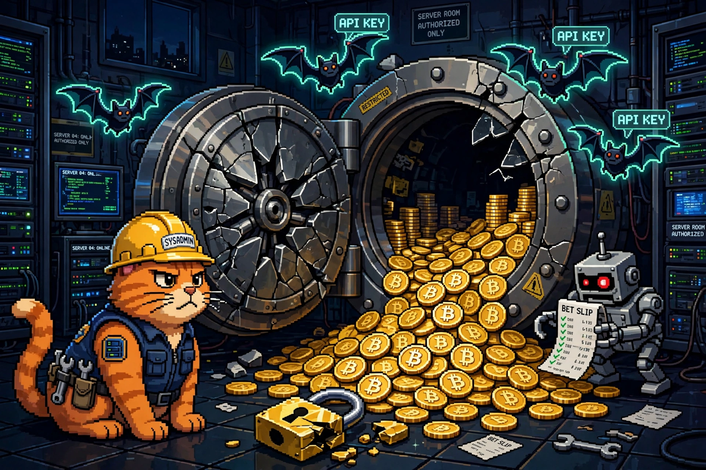

Cyber SOTU: The Week the Vault Got Emptied (Oct 25–Nov 1, 2026)

The cat is guarding the vault. The coins are already gone. That's basically this entire week.
Welcome back to the Cyber SOTU — the State of Cyber, delivered every Sunday. Five stories from the week that mattered, translated into plain English: what happened, why you should care, and what to do about it. This week's theme: the money — the largest crypto heist in history, AI API keys spent like stolen credit cards, a betting market drained through a single script, and a breach at a household-name ISP. Attackers stopped stealing data and started stealing the cash register.
💰 The $6.3B Binance heist: North Korea emptied the vault in 20 minutes
What happened: On October 29, attackers walked roughly $6.36 billion in cryptocurrency out of Binance — the world's largest exchange — across ten blockchains, most of it in about 20 minutes. Binance's initial investigation pointed to a compromised DevOps engineer's laptop that let the attacker reach a service container and submit unauthorized withdrawals; by Friday the company said it had found "additional points of breach" and that this was not a single one-click action. On October 31, the FBI formally attributed the theft to TraderTraitor, the North Korean state-sponsored group also tracked as Lazarus Group, Jade Sleet, and APT38, and published 628 crypto addresses tied to the laundering. Binance says it has covered about 95% of the stolen amount from company funds and began resuming withdrawals on November 1.
Why it matters: This is now the largest crypto theft on record — roughly four times the $1.5 billion Bybit heist that held the title until this week, and the FBI had already blamed the same group for that one. The speed is the story: $6.3 billion, gone in the time it takes to order a pizza. And the entry point — one engineer's laptop — is the same mundane foothold behind a dozen "sophisticated" breaches this year. The vault didn't have a weak lock; somebody left the side door open.
What to do: If you hold crypto on any exchange: turn on hardware-key or authenticator-based 2FA (not SMS), keep most funds in a cold wallet, and never approve a withdrawal or transaction you didn't initiate. Exchanges and blockchain services should block the FBI's published addresses. Source: BleepingComputer →
🦊 GitLab's perfect 10 and Cisco's VPN bug both hit their CISA deadline today
What happened: On October 29, CISA added two flaws to its Known Exploited Vulnerabilities catalog with an unusually short three-day deadline — both due today, November 1. CVE-2026-97229 is the CVSS 10.0 GitLab regex-compiler flaw from October 12, now confirmed exploited in the wild; Alpine Linux says attackers hit its GitLab server with it on October 20–21, and it rebuilt the server from scratch and reset every password because it couldn't rule out code execution. CVE-2026-76418 is an exploited Cisco ASA/FTD flaw that lets an unauthenticated attacker reload a firewall during an SSL VPN connection when a tunnel group uses secondary authentication.
Why it matters: A three-day federal deadline is CISA-speak for "this one is genuinely bad, move" — and the Alpine case shows why: a patched-on-paper GitLab server was still being hit two weeks after the fix shipped. The GitLab flaw is the same family as the second CVSS 10.0 from last week, which means self-managed GitLab instances have now had two maximum-severity regex RCEs in under a month.
What to do: Self-managed GitLab: patch CVE-2026-97229 now (19.2.8, 19.3.5, 19.4.2 or later for your branch) and check for signs of compromise — patching alone doesn't evict an attacker who already got in. Cisco ASA/FTD with SSL VPN: upgrade to a fixed release today. Source: InfosecPwn →
🤖 "Black October": nine AI developer platforms breached in one month
What happened: Wiz Research has named October 2026 "Black October" for AI developer platforms: at least nine disclosed security incidents in a single month, from Fireworks AI on October 6 through Northflank on October 30. The latest, UK hosting platform Northflank, told customers to assume every environment variable on its platform had been decrypted and to rotate all of their keys. The common thread: attackers hunting stored secrets — especially AI API keys — and then running up inference bills in a scam called LLMjacking. In two cases Wiz investigated, stolen enterprise credentials powered about 2.5 million Amazon Bedrock API calls, generating roughly $100,000 in charges; in one case the keys were used within 30 minutes of the theft.
Why it matters: AI API keys are close to cash — they convert directly into compute, and compute converts into money. Nine platforms in a month, with no single vulnerability linking them, means the target isn't a bug: it's the business model of storing secrets in environment variables on someone else's platform. And the "agent swarm" reports — automated AI agents doing much of the intrusion work — mean the attackers are scaling the same way the platforms are.
What to do: If you use Northflank, Railway, or any AI dev platform hit this month: rotate every stored secret and AI API key, review your inference bills for surprise charges, and scope keys to the minimum permissions (and spending caps) your app actually needs. Source: QUE.com →
🪪 Sony's So-net: 2.58 million subscriber records exposed
What happened: Sony Network Communications disclosed on October 27 that an intruder reached the membership database behind its So-net and plala consumer internet services in Japan, exposing 2,585,481 subscriber records — names, phone numbers, email addresses, user IDs, dates of birth, gender, and internet connection IDs. The intrusion began October 19 and was discovered October 23; the company shut down the affected server and blocked the source. The breach also exposed the passwords for 54,401 email accounts across four mail services (Sony reset them on October 27) and bank-account details for 16 customers. PlayStation Network and NURO customers were not affected.
Why it matters: This lands amid a wave of corporate breaches in Japan — the government is now preparing emergency cybersecurity measures — and it's a textbook reminder that "ISP data" is identity data: names, birth dates, and phone numbers are exactly what makes the next phishing email convincing. Four days inside before detection is also a long time for a membership database.
What to do: So-net and plala customers: set a new email password through the official So-net portal (never via an emailed link), and watch for phishing that uses your real details. Everyone else: this is the same data class as the Capcom breach last week — treat any "your ISP" email with suspicion. Source: CyberInsider →
🎲 Polymarket: a poisoned script drained about $2M from users' wallets
What happened: On October 30, a compromised third-party performance-monitoring script on Polymarket's site drained roughly $2 million from users' wallets. The script ran on authenticated pages, so it could ride users' live sessions to move funds. Polymarket has since put a final number on its refunds to affected users. It's the same week the FBI tied the Binance heist to North Korea — a reminder that crypto platforms were attacked from both ends at once: the exchange's back door and the user's front door.
Why it matters: This is the supply-chain attack that doesn't need a vulnerability in your code. One vendor's script, loaded on one page, turned every logged-in user into a target — no phishing, no malware, no click required. If your site loads third-party scripts on pages where users are signed in or moving money, those scripts are part of your attack surface whether you wrote them or not.
What to do: Polymarket users: check your wallet and session history, revoke any sessions you don't recognize, and confirm your refund. Site owners: inventory every third-party script on authenticated pages, remove the ones you don't need, and put the rest behind Subresource Integrity checks and a Content Security Policy. Source: InfosecPwn →
Your Sunday homework, courtesy of this week's SOTU:
- GitLab (self-managed): patch CVE-2026-97229 today — it's a CISA KEV deadline, and Alpine's server shows attackers are already using it
- Cisco ASA/FTD with SSL VPN: upgrade to a fixed release for CVE-2026-76418 — also due today
- Northflank / Railway / any AI platform hit in October: rotate every stored secret and AI API key, and check your inference bills for surprise charges
- So-net and plala customers: reset email passwords via the official portal; watch for phishing armed with your real details
- Polymarket users: check wallets, revoke stray sessions, confirm your refund
- Crypto holders everywhere: hardware-key 2FA, cold wallet for the bulk of it, and never approve a withdrawal you didn't start
That's the state of cyber for the week of October 25–November 1. The theme, if you squint: the vault was never the hard part — a laptop, a script tag, an environment variable, a membership database. The money moves through the boring doors. Lock those, rotate your keys, and I'll see you next Sunday. 🐱
Every Sunday at 7 PM ET, right here and on the mckai.net homepage. Past editions live in the blog under the NEWS tag.